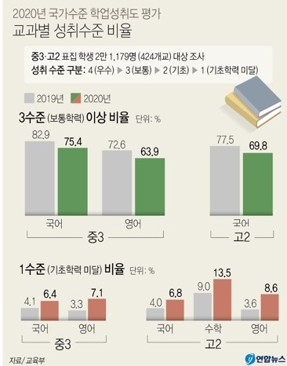
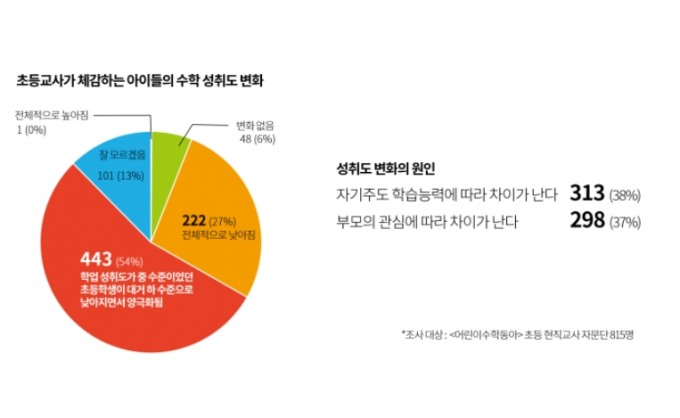

<!DOCTYPE html>
<html lang="ko">
<head>
  <meta charset="UTF-8">
  <title>blog7</title>
  <link rel="stylesheet" href="css/blog-2800.css">
</head>
</html>
<body>
  <div id="base">
    <div class="header">
      <h1>학생들은 온라인 수업에 잘 적응하고 있을까? 온라인 수업과 학업성취도의 상관관계</h1>
    </div>
    <hr>

    <div class="content">
      <p> 코로나19의 유행으로 학생들이 학교에 등교하지 않고 온라인으로 수업하기 시작했다. 초등학생부터 대학생까지 모두 
        집에서 컴퓨터나 노트북, 태블릿 등으로 인터넷에 접속하여 수업을 듣고 공부한다. 학생들은 힘들게 학교에 등교해서 공부하지 않고 
        편한 환경에서 공부하게 된 것을 기뻐했다.
      </p>
      <p>하지만 마냥 좋은 점만 있는 것은 아니다. 과연 학생들은 집에서 자율적으로 잘 공부하고 있을까? 통계청의 결과에 따르면 
        온라인 수업으로 바뀐 이후 학생들의 학업성취도가 떨어졌다고 밝혔다. 
      </p>
      
      <span style="font-size: 13px; padding-top:5px; color: rgb(129, 128, 128)">온라인 수업 변화 이후 학생들의 학업성취도</span>

      <p>온라인 수업이 시작되면서 공부는 거의 학생들의 자율적 의지에 맡겨졌다. 집에서 있으면서 공부를 하기 보다는 게임을 하거나 
        TV, youtube를 시청하면서 공부를 거의 하지 않게 된 것이다. 초등학교 선생님들은 학생들의 학업 성취도가 대폭 낮아졌다는 것을 
      강하게 체감한다고 답했다.</p>
      
      <span style="font-size: 13px; padding-top:5px; color: rgb(129, 128, 128)">초등학교 선생님이 느끼는 아이들의 수학 성취도</span>
      <p>아이들이 공부를 자발적으로 할 수 있게 하는 자극이 부족하다 보니 이런 문제점이 발생한 것이다. 아이들은 온라인 수업의 장기화에 
        공부에 대한 의지를 잃어가고 있다. 아이들의 공부에 대한 의지를 키워주기 위해서는 부모의 지속적인 관심과 칭찬이 필요하다.
      </p>
      <a href="https://www.youtube.com/watch?v=qgCDuE47xew " target="_blank"></a>

    </div>
    
    <div id="lightbox">
      
    </div>

    <div class="footer">

    </div>

  </div>


  <script src="lightbox.js"></script>
</body>